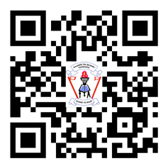

Preface
This textbook, Book-keeping for Secondary Schools, is written specifically for Form One students in the United Republic of Tanzania. The book is prepared in accordance with the 2023 Book-keeping Syllabus for Ordinary Secondary Education, Form I-IV, issued by the Ministry of Education, Science and Technology (MoEST). It is a revised edition of Book-keeping for Secondary Schools Student’s Book for Form One that was published in 2022.
The book consists of seven (7) chapters, namely Introduction to Book-keeping, Basic principles of Book-keeping, Application of the double entry system, Recording of business transactions, Ledgers, Trial balance, and Basic financial statements. In addition to the contents, each chapter contains activities, illustrations, exercises, and revision exercises. You are encouraged to do all activities and exercises as well as other assignment provided by your teacher. You are also required to prepare a portfolio for keeping record of activities perfomed in different lessons. Doing so will enable you to develop the intended competencies.
Additional learning resources are available at TIE e-Library. https://ol.tie.go.tz or ol.tie.go.tz.

Tanzania Institute of Education